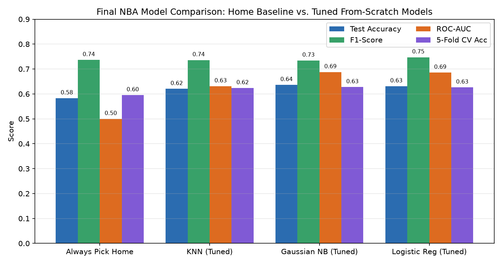

Gaussian Naive Bayes
Home win probability
--
Compares bell-curve stat distributions for past wins vs. losses.
2022–23 Regular Season · From-Scratch Machine Learning
Pick any two NBA teams or load a real holdout game to see live win probabilities from three classification models built completely from scratch — running directly in your browser.
Select an Away and Home team, tweak their pre-game stats, or test a real game from the 187-game holdout set.
Compares bell-curve stat distributions for past wins vs. losses.
Combines all 23 standardized team stats using learned weights.
Checks how often the home team won in the 35 most similar games.
Adjust any number below to run "what-if" scenarios (for example, set Rest Days to 1 for a Back-to-Back game).
All 5 matchup differentials (diff_*), season point margins, and back-to-back indicators are calculated automatically to build the exact 23-feature model vector.
Top feature contributions from Tuned Logistic Regression for this matchup (Blue = favors Home, Orange = favors Away).
The 5 closest historical training games out of the 35 neighbors used by Tuned KNN.
Every game from Jan 28 to Feb 28, 2023 was locked away during training and tuning. Filter below or click Inspect to examine any matchup.
| Date | Matchup & Final Score | Actual | Gaussian NB | Logistic Reg | KNN (k=35) |
|---|
Evaluated on the same 187 chronological holdout games plus 5-fold expanding-window cross-validation.
| Model | Settings | Test Acc | F1-Score | ROC-AUC | Log-Loss | 5-Fold CV |
|---|
Higher is better for Accuracy, F1-Score, ROC-AUC, and 5-Fold CV. Lower is better for Log-Loss. Green highlights mark the best score in each metric.

Built end-to-end without scikit-learn or pandas to demonstrate core machine learning fundamentals clearly.
931 games from the 2022–23 season are sorted by date and split 80/20 without shuffling.
Feature scaling ((x − mean) / std) is learned strictly on the first 744 games so future outcomes never leak into training.
KNN, Gaussian Naive Bayes, and Logistic Regression were written in pure Python & NumPy and tuned over 46 configs via 5-fold time-series CV. This webpage executes those exact trained formulas live in vanilla JavaScript.
NBA games have heavy night-to-night randomness (injuries, foul trouble, hot 3-point shooting). Reaching 63.64% beats the 58.29% always-pick-home baseline by +5.35 points using pre-tipoff team box scores alone.